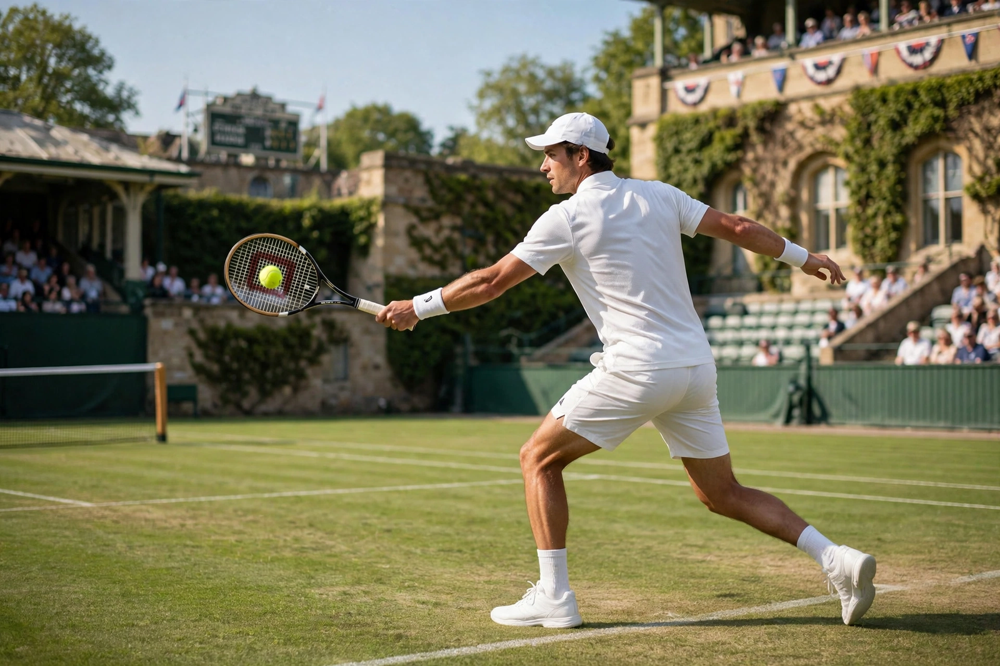

From Wikipedia, the free encyclopedia
| Roger Federer | |
|---|---|
 Roger Federer hitting a one-handed backhand on Centre Court at Wimbledon | |
| Born | 8 August 1981, Basel, Switzerland |
| Turned pro | 1998 |
| Retired | 2022 |
| Plays | Right-handed (one-handed backhand) |
| Grand Slam singles | 20 titles (8 Wimbledon — record) |
| Career titles | 103 ATP singles titles; 310 weeks at world No. 1 |
Roger Federer (born 8 August 1981) is a Swiss former professional tennis player. He was ranked world No. 1 by the ATP for 310 weeks, including a record 237 consecutive weeks, and won 20 Grand Slam singles titles, third behind Novak Djokovic (24) and Rafael Nadal (22) in the men's game. His graceful, all-court style and effortless shot-making made him a global ambassador for the sport.
Federer won his first major at Wimbledon in 2003 and dominated the mid-2000s, winning twelve majors between 2004 and 2007. He holds the record of eight Wimbledon singles titles and reached a record ten consecutive Grand Slam finals (2005–2007). His epic 2008 Wimbledon final against Nadal is frequently called the greatest match ever played. Returning from knee surgery, he won three more majors in 2017–2018, including the 2018 Australian Open at 36. He retired after the 2022 Laver Cup in London, playing his final match in doubles alongside Nadal.
Federer, Nadal and Djokovic — the "Big Three" — dominated men's tennis for two decades, and Federer is credited with a leading role in the sport's surge in worldwide popularity and prize money. Off court he founded the Roger Federer Foundation, supporting education projects in Africa and Switzerland.
Categories: 1981 births | Living people | Swiss male tennis players | Wimbledon champions